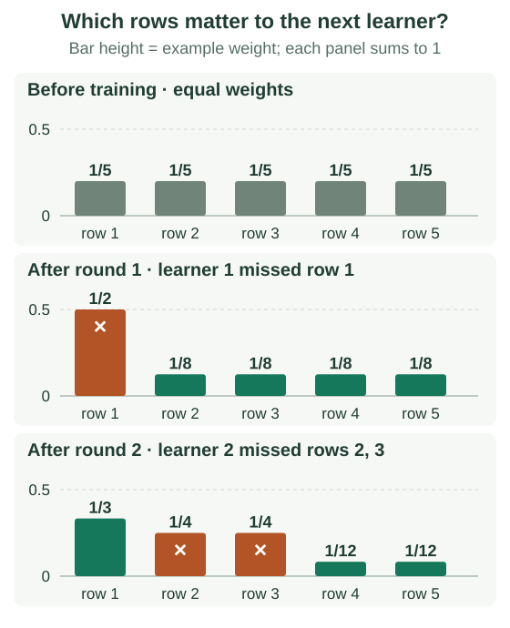

AdaBoost: Weights, Votes & the Proof
AdaBoost changes the importance of training examples and combines the resulting classifiers with weighted votes. This chapter uses binary discrete AdaBoost: every label and learner prediction is −1 or +1.
The two kinds of weight do different jobs. Example weights tell the next learner which mistakes cost the most. Learner votes tell the final ensemble which classifiers have more influence. Follow five rows through two rounds to keep those roles separate.
Separate example weights from learner votes
At round $t$, let $D_t(i)$ be the weight of training row $i$; these weights sum to 1. Fit a classifier $h_t$ using them. Its weighted error $\epsilon_t$ is the sum of weights on rows it gets wrong.
The new classifier’s vote strength is $\alpha_t$. For an error strictly between 0 and 0.5, use:
A lower weighted error earns a larger positive vote. Multiply each missed row’s weight by $e^{\alpha_t}$ and each correct row’s by $e^{-\alpha_t}$, then normalize again. The next learner sees those revised priorities.
Keep the earlier fitted learners fixed. Only the next learner is trained with the new example weights. A shallow decision tree is one possible base learner; the update does not require a particular kind of classifier.
Work through two rounds
Start with five rows weighted 0.2 each. Suppose the first learner misses only row 1. Its error is 0.2, giving $\alpha_1=\ln2\approx0.693$. Multiply the missed row by 2 and the others by 0.5. The unnormalized weights total 0.8; divide by 0.8.
Row 1 now has weight $0.2\times2/0.8=0.5$; each other row has $0.2\times0.5/0.8=0.125$. Missing row 1 alone now costs as much as missing the other four rows together. This gives the next learner a reason to choose a different rule.
Now suppose the second learner misses rows 2 and 3. They each weigh 0.125, so its weighted error is 0.25 even though it misses two of five rows. Its vote is $\alpha_2=\tfrac12\ln3\approx0.549$.
| Row | Initial weight | After round 1 | After round 2 |
|---|---|---|---|
| 1 | 0.2 | 0.5 | 1/3 |
| 2 | 0.2 | 0.125 | 1/4 |
| 3 | 0.2 | 0.125 | 1/4 |
| 4 | 0.2 | 0.125 | 1/12 |
| 5 | 0.2 | 0.125 | 1/12 |
Round 2 multiplies its missed rows by $\sqrt3$ and correct rows by $1/\sqrt3$, then renormalizes. Every column sums to 1. These are training weights, not relabelings or new observations.

For example, the second normalization constant is $0.25\sqrt3+0.75/\sqrt3=\sqrt3/2$. Row 2 becomes $(\tfrac18\sqrt3)/(\sqrt3/2)=1/4$, while row 1 becomes $(\tfrac12/\sqrt3)/(\sqrt3/2)=1/3$. The newest learner’s two missed rows now carry half the total weight between them.
Check your understanding: could round 2 simply reuse learner 1?
Learner 1 still misses only row 1, which now carries weight 0.5. Its new weighted error would therefore be 0.5, giving vote $\tfrac12\ln(0.5/0.5)=0$. Repeating it would make no progress. Its original vote remains 0.693; earlier votes are not recomputed using later weights.
A correct new prediction need not fix the ensemble immediately
At prediction time, add each learner’s vote times its ±1 output, then use the sign of the total. Example weights $D_t(i)$ are training quantities; they are not needed to predict a new row.
Suppose row 1’s true label is +1. Learner 1 predicts −1 and learner 2 predicts +1, as required by our error pattern. The combined score is $0.693(-1)+0.549(+1)=-0.144$, so the ensemble still predicts −1. The first learner has the larger vote.
Yet row 1’s weight fell from 0.5 to 1/3. There is no contradiction: the latest learner got it right, so this round reduced its relative weight and moved its score toward the correct side. The update is based on the new learner’s prediction. It does not promise that every reweighted row changes its ensemble label immediately.
Choose a fixed tie rule for a score of zero. The stump animation runs actual rounds on a two-feature dataset; the next section explains why these update factors arise.
Why the vote is a log ratio
The current combined score is $F(x)$. Multiplying it by the true label $y_i$ gives a positive number for a correct prediction and a negative one for a wrong prediction. Exponential loss assigns row $i$ the cost $e^{-y_iF(x_i)}$.
Derive the vote and weight update
Let $L(F)$ be the sum of those row costs. The current normalized weights are $D(i)=e^{-y_iF(x_i)}/L(F)$. Hold a new classifier $h$ fixed and add a vote $\alpha h$ to $F$. Correct and incorrect rows have total old weight $1-\epsilon$ and $\epsilon$, respectively. Thus
Differentiate with respect to the vote strength, set the derivative to zero, and solve:
The second derivative is positive for $0<\epsilon<1$, so this is the minimum. For each row, adding the vote multiplies its old loss by $e^{-\alpha y_i h(x_i)}$. Renormalizing these losses gives exactly the example-weight update. This derivation describes the unshrunk binary update; a learning-rate multiplier changes the exact line minimization.
Why zero classification error need not end learning
The signed margin is $y_iF(x_i)$. Once it is positive, the label is correct, but increasing it still reduces exponential loss. This explains why more rounds can change the model after it has classified every training row correctly.
What does the training-error guarantee assume?
Let $Z_t=2\sqrt{\epsilon_t(1-\epsilon_t)}$ be the optimized loss ratio for round $t$, and let $\gamma_t=1/2-\epsilon_t$ be its advantage over chance. Starting with equal weights, the fraction of training mistakes, counting ties as errors, obeys
The first inequality holds because a wrong or tied prediction has exponential loss at least 1. The second uses $Z_t=\sqrt{1-4\gamma_t^2}$ and $\ln(1-u)\leq-u$. A fixed lower bound $\gamma_t\geq\gamma>0$ gives exponential decay in the number of rounds. Merely being below 50% by an ever-shrinking amount does not give that uniform rate. This bounds training error, not test error.
Handle the cases the formula excludes
- Perfect learner: error zero would require an infinite vote. Handle it explicitly and stop.
- Error 0.5: the vote is zero, so this round makes no progress.
- Error above 0.5: reject or refit the learner; flipping every binary prediction is another option.
- Noisy labels: repeated mistakes can accumulate excessive weight. Validate the number of rounds and learner capacity.
A combined score is not automatically a calibrated probability. For corrections under other losses, continue to gradient boosting.
Sources and next steps
- Schapire: The Boosting Approach to Machine Learning — Binary AdaBoost, exponential loss, and training-error bounds.